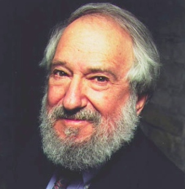
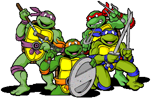

turtle is a Python module…
So, what's this Logo thing about?

Imagine you have a turtle hanging out on the beach…
So… in Python, we now have access to our own drawing turtle
This draws a line (that's exactly 200 pixels). (exciting). Let's try running it.
import turtle
wn = turtle.Screen()
leo = turtle.Turtle()
leo.forward(200)
wn.mainloop()Running these programs (from IDLE or from Terminal!) cause a new window to pop up. You may encounter some minor annoyances:
bring in the turtle module
import turtlecreate a Screen object (this provides a canvas to draw on, and some window related commands)
wn = turtle.Screen()create a Turtle object to draw with
leo = turtle.Turtle()tell the turtle to move forward 200 pixels
leo.forward(200)start the program!
wn.mainloop()So… I used the word object there a few times. What does that actually mean?
dir("hello")import turtle
wn = turtle.Screen()
leo = turtle.Turtle()
leo.forward(200)
wn.mainloop()What did we have to do?
We should probably convert our hello program into a template. You'll need to write this stuff every time you create a program with turtle:
# bring in the turtle module
import turtle
# create a Screen object
wn = turtle.Screen()
# create at least one Turtle object
t = turtle.Turtle()
# tell your turtle to do stuff here, like... t.forward(200)
# tell the Screen object to start the program
wn.mainloop()
These are all methods that you can call on your Turtle object.
t.forward(200)
t.right(45)BTW… what do you think this draws? →
import turtle
wn = turtle.Screen()
t = turtle.Turtle()
t.back(75)
t.right(90)
t.forward(50)
t.left(90)
t.forward(100)
t.right(90)
t.forward(70)
t.right(90)
t.forward(100)
wn.mainloop()Methods you can call on your Turtle object:
t.color("blue")Methods you can call on your Screen object
wn.bgcolor("pink")import turtle
wn = turtle.Screen()
wn.setup(500, 500) # set the width and height of the window
t = turtle.Turtle()
wn.bgcolor("green") # change the background color to green
t.color("yellow") # change the color of the pen
t.back(100)
t.pensize(20) # change the size of the pen
t.left(45)
t.color("blue") # change the color of the pen again
t.forward(150)
wn.mainloop()Methods you can call on your Turtle object:
t.up() # picks the pen up, doesn't draw when the turtle movesBTW… what do you think this draws? →
import turtle
wn = turtle.Screen()
t = turtle.Turtle()
t.pensize(5)
t.left(90)
t.forward(40)
t.up() # don't draw
t.forward(20)
t.down() # draw
t.forward(40)
t.up() # don't draw
t.forward(20)
t.down() # draw
t.forward(40)
wn.mainloop()A method you can call on your Turtle object:
goto(x, y) - move the turtle to the specified coordinates …x and y. Note that if the pen is down, it will draw up to that coordinate.
t.goto(200, 200) # picks the pen up, doesn't draw when the turtle movesBTW… what do you think this draws? →
import turtle
wn = turtle.Screen()
t = turtle.Turtle()
# go to the following coordinates... (while drawing!)
t.goto(-100, 0)
t.goto(-100, 100)
t.goto(-50, 150)
t.goto(0, 100)
t.goto(0, 0)
wn.mainloop()A quick demo using goto: let's try incorporating random elements to our drawings! →
import turtle
import random
wn = turtle.Screen()
t = turtle.Turtle()
t.color("blue")
for i in range(50):
t.pensize(random.randint(1, 12))
t.goto(random.randint(-300, 300), random.randint(-200, 200))
if i == 25:
# change the color once to green
t.color("purple")
wn.mainloop()How would we tell the turtle to create a square with the upper left corner at the origin? Each side should be 200px long. We just learned goto, so let's try that.→
import turtle
wn = turtle.Screen()
t = turtle.Turtle()
t.goto(200, 0)
t.goto(200, -200)
t.goto(0, -200)
t.goto(0, 0)
wn.mainloop()Same thing, but this time, just use forward or back and either left or right. →
import turtle
wn = turtle.Screen()
t = turtle.Turtle()
t.forward(200)
t.right(90)
t.forward(200)
t.right(90)
t.forward(200)
t.right(90)
t.forward(200)
t.right(90)
wn.mainloop()How can we simplify the previous version? There was a lot of repeated code! →
Clearly, this calls for a for loop!
import turtle
wn = turtle.Screen()
t = turtle.Turtle()
for i in range(4):
t.forward(200)
t.right(90)
wn.mainloop()Ugh… so, every time we want a square, we have to write another loop? That seems a bit cumbersome.
What can we do to package up a drawing of a square so that we we don't have to explicitly worry about looping? →
How about we write a function?
Write a function to draw a square with a side of length 200. →
# turtle setup
function draw_square():
for i in range(4):
t.forward(200)
t.right(90)
draw_quare()
wn.mainloop()So, our function worked pretty well for drawing a square, but there's a major shortcoming. What's not so great about the draw_square function that we created? →
For every different sized square, we'd have to create another function. How do we get around this? →
Parameterize the side length!
def draw_square(side_length):
for i in range(4):
t.forward(side_length)
t.right(90)Eh? That was a lot of work, but for what. Let's try our new draw square_function by drawing a lot of squares! →
for size in range(10, 501, 10):
draw_square(size)
t.up()
t.back(5)
#t.forward(5)
t.down()
#t.left(10)It's fun watching the turtle draw stuff for the first couple of times you work on your program, but it gets super annoying immediately after that.
Just like cooking shows where the food magically appears all cooked, we can get to the drawing results faster by adding these two lines of code: →
# after creating a turtle and a screen...
t.hideturtle()
wn.tracer(0)
# after drawing stuff...
wn.update()Ok… so those two special methods for drawing more quickly were:
Long live pentagons! More sides equals more better, right!?
But first. Some geometry
So, for a pentagon, when we apply the calculations from the previous slide… →
Ok, so that means we have 5 sides, and the turtle has to turn 72 degrees. Let's create a draw_pentagon function →
def draw_pentagon(side_length):
for i in range(5):
t.forward(side_length)
t.right(72)
draw_pentagon(200)Let's check out our draw_square and draw_pentagon functions. Can anyone find another thing to parameterize? →
def draw_square(side_length):
for i in range(4):
t.forward(side_length)
t.right(90)
def draw_pentagon(side_length):
for i in range(5):
t.forward(side_length)
t.right(72)The number of sides!
So many shapes. Let's create one function that could draw a square, pentagon or even a tetradecagon. →
Create a function called draw_poly that has two parameters:
Remember the following calculations:
def draw_poly(sides, side_length):
sum_interior_angles = (sides - 2) * 180
interior_angle = sum_interior_angles / sides
a = 180 - interior_angle
for i in range(sides):
t.forward(side_length)
t.right(a)Let's draw a bunch of polgons, starting with a rectangle, going up to and including a 10-gon. →
t.up()
t.back(300)
t.down()
for sides in range(3, 11):
draw_poly(sides, 1 / sides * 175)
t.setheading(0)
t.up()
t.forward(70)
t.down()We were kind of approaching a circle at the end there. This is a pretty decent approximation. →
draw_poly(60, 30)Buuuut… of course there's also a circle(radius method:
t.circle(50)Let's bring time into the mix! →
The Screen object function, ontimer, allows a function to be executed some specified time (in milliseconds) later. For example, the following code would call a function called my_draw 500 milliseconds later.
wn.ontimer(my_draw, 500)Notice that the function name is passed in as you would any other variable name.
On to an example… →
What will happen when this program is run? →
# usual turtle set up above is omitted
t.hideturtle()
wn.tracer(0)
# assuming draw_square function was defined above
def draw_stuff():
draw_square(20)
t.up()
t.forward(22)
t.down()
wn.update()
wn.ontimer(draw_stuff, 2000)
wn.ontimer(draw_stuff, 4000)
wn.ontimer(draw_stuff, 6000)
wn.ontimer(draw_stuff, 8000)
wn.mainloop()Let's modify our draw_stuff method ever so slightly. What will happen when this program is run? →
def draw_stuff():
draw_square(20)
t.up()
t.forward(22)
t.down()
wn.update()
# move ontimer into the function body
wn.ontimer(draw_stuff, 500)
# now call draw_stuff once...
draw_stuff()To reset the drawings on the screen, just call clear on your turtle object!
t.clear()This is actually kind of handy because… we can do clear the screen before drawing each square (which essentially has the effect of… ???) →
Clearing the screen before we draw a square at a new position has the effect of animation! →
def draw_stuff():
# clear the screen
t.clear()
draw_square(20)
t.up()
# descrease the forward movement
t.forward(22)
t.down()
wn.update()
wn.ontimer(draw_stuff, 500)Ok … so this is a bit ambitious. Let's try creating a bouncing circle. Starting with some setup code: →
import turtle
t, wn = turtle.Turtle(), turtle.Screen()
turtle_x, turtle_y, turtle_dx, turtle_dy = [0], [0], [0], [-0.1]
# store acceleration
acc = -0.5
# turn animation of turtles off
wn.tracer(0)
t.hideturtle()
# draw function goes here
draw()
wn.mainloop()Aaaand… filling in our draw function →
def draw():
t.clear()
t.penup()
t.goto(turtle_x[0], turtle_y[0])
t.pendown()
turtle_y[0] += turtle_dy[0]
# change velocity based on acceleration
turtle_dy[0] += acc
t.circle(15)
wn.update()
wn.ontimer(draw, 30)
# bounce!
if turtle_y[0] <= -250:
turtle_dy[0] *= -1What's an object and what's a method? →
Running these programs (from IDLE or from Terminal!) cause a new window to pop up.